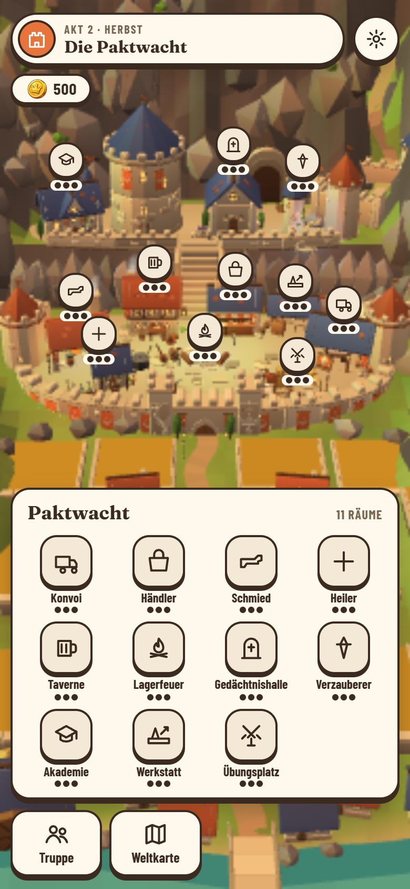
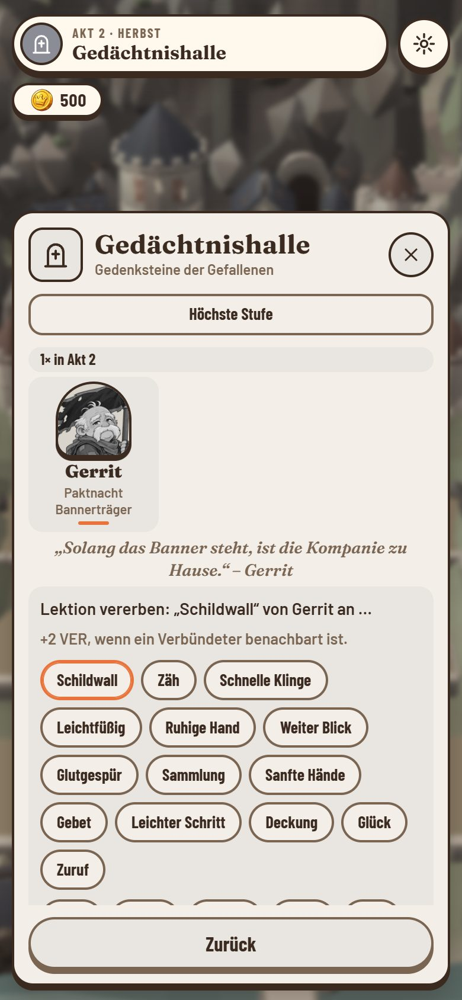

Besondere Waffen leuchten auf Ständern, Tippen öffnet die Waffenansicht. Offen sind drei Dinge: wo die Vitrine steht, was hineinkommt und wie man sie von außen an der Burg sieht. Die Modelle unten sind die echten Waffen v2 mit Runen.


Gilt für alle drei Varianten. Schalte um und sieh dir an, wie voll oder leer es wird.
Vorschlag: Die Vitrine ist ein Spiegel, keine Ablage. Sie zeigt jede besondere Waffe, auch die, die gerade jemand trägt (als Umriss mit seinem Kopf). Nichts muss hineingelegt oder herausgeholt werden, keine Waffe fehlt dadurch im Kampf.
Jeder Rahmen hat drei Schritte: Burg, Vitrine, Waffe. Tippe auf die markierte Stelle in der Burg und dann auf ein Namensschild.
Die Gedächtnishalle bekommt einen zweiten Reiter „Waffenkammer“. Vor der Halle auf dem Felsabsatz steht eine Reihe Waffenständer; jeder gefüllte glimmt in der Farbe seiner Rune.
Der Schmied hängt die besonderen Waffen an eine Wand neben der Esse. Im Panel liegt die Wand als zweiter Reiter neben „Schmieden“; in der Burg glimmt die Wand an der Schmiede.
Ein eigener Stein mit Schwert über dem Bergfried, ohne Stufen und Ausbau. Er erscheint mit dem ersten Relikt oder der ersten Signaturwaffe. Tippen öffnet ein Gewölbe als 3D-Vollbild, die Ständer stehen im Halbkreis, Wischen dreht den Blick. Außen hängt je Stück ein Banner am Bergfried.